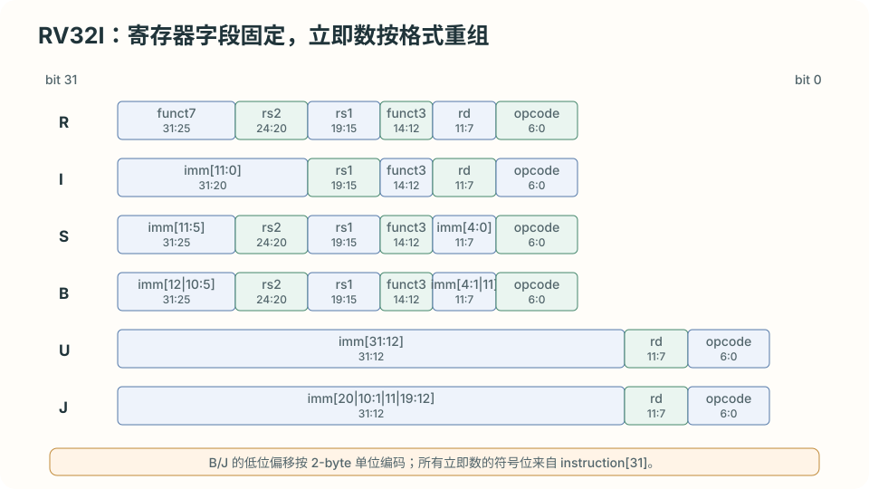
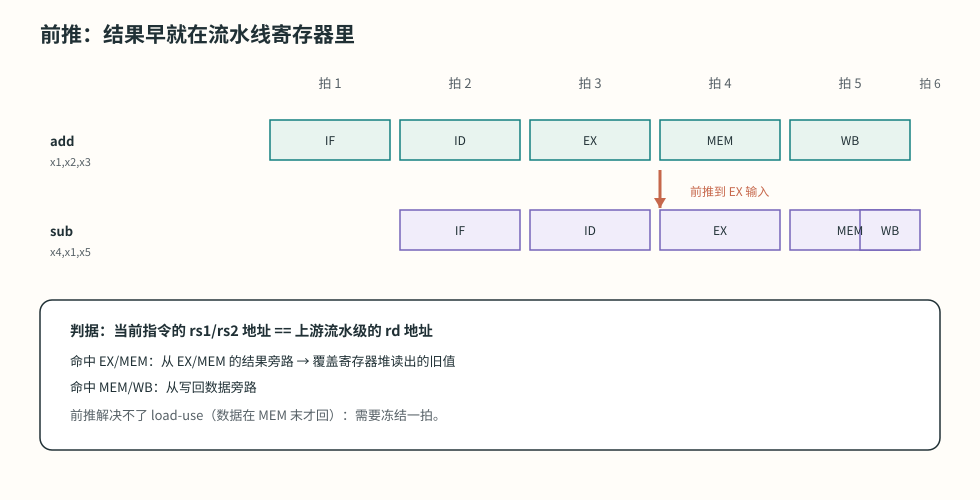

RISC-V 的 FPGA 实现：从指令编码到五级流水线
RISC-V 是开放的指令集，把它的每一行实现写出来，是理解“处理器到底在做什么”最直接的方式。重点不在跑得多快，而在每条指令与控制冒险都有可验证的依据。
01 / 为什么在 FPGA 上实现 RISC-V
RISC-V 是一个开放、模块化、可扩展的指令集架构（ISA）：任何人可以实现它而不需要授权费，且其基础整数集足够小，可以在一份 RTL 里写清楚。对 FPGA 开发者而言，实现一个 RISC-V 核的价值不在于“造一个比 ARM 快的 CPU”，而在于逼你把处理器的每一条路径写出来并验证。
与第 20 章的软核不同，这里的重点不是集成一个现成处理器，而是理解指令如何变成数据通路上的电平。本章用一个 RV32I 五级流水线骨架贯穿：指令格式 → 译码 → 执行 → 冒险处理。
02 / RV32I 指令格式与编码
RV32I 是所有指令都为 32 位定长的基础整数集，只有六种编码格式：R（寄存器运算）、I（立即数与加载/跳转）、S（存储）、B（条件分支）、U（高位立即数）、J（无条件跳转）。字段位置固定，意味着译码器只需按固定切位取出 opcode[6:0]、funct3[14:12]、funct7[31:25]、rd[11:7]、rs1[19:15]、rs2[24:20]（参见 RISC-V 指令集手册）。

| 指令 | 格式 | opcode [6:0] | funct3 [14:12] | funct7 [31:25] |
|---|---|---|---|---|
| ADD | R | 0110011 | 000 | 0000000 |
| SUB | R | 0110011 | 000 | 0100000 |
| AND / OR / XOR | R | 0110011 | 111 / 110 / 100 | 0000000 |
| ADDI | I | 0010011 | 000 | — |
| LW | I | 0000011 | 010 | — |
| SW | S | 0100011 | 010 | — |
| BEQ | B | 1100011 | 000 | — |
| JAL | J | 1101111 | — | — |
| LUI | U | 0110111 | — | — |
寄存器堆有 32 个 32 位通用寄存器 x0～x31，其中 x0 硬连到 0：任何对 x0 的写入都被丢弃。这条规定让一些“把寄存器置零”的场景不需要单独的指令，也简化了寄存器堆的实现。
03 / 五级流水线数据通路
经典五级流水线把一条指令拆成五段，每段一拍：IF 取指 → ID 译码与读寄存器 → EX 执行 → MEM 访存 → WB 写回。相邻两段之间插入流水线寄存器，把上一段的结果在该时钟沿锁住，供下一段使用。所以“流水线”首先是一组寄存器链，而不是一堆组合逻辑。
下面的骨架只保留这段寄存器链与关键控制信号，帮你看清数据是怎样逐级推进的：
module rv32i_pipeline_top (
input wire clk, rst_n,
output reg [31:0] pc,
input wire [31:0] instr, // 指令存储器输出
output wire [31:0] dmem_addr,
input wire [31:0] dmem_rdata,
output wire [31:0] dmem_wdata,
output wire dmem_we
);
reg [31:0] rf [31:0]; // 32 x 32 寄存器堆
// ---- IF/ID ----
reg [31:0] if_id_pc, if_id_instr;
always @(posedge clk) begin
if (!rst_n) begin pc <= 0; if_id_pc <= 0; if_id_instr <= 0; end
else begin pc <= pc + 32'd4; if_id_pc <= pc; if_id_instr <= instr; end
end
// ---- ID: 固定字段切位 ----
wire [6:0] opcode = if_id_instr[6:0];
wire [2:0] funct3 = if_id_instr[14:12];
wire [6:0] funct7 = if_id_instr[31:25];
wire [31:0] rs1_val = rf[if_id_instr[19:15]];
wire [31:0] rs2_val = rf[if_id_instr[24:20]];
// ---- ID/EX → EX → EX/MEM → MEM → MEM/WB → WB ----
// （此处省略控制译码、立即数拼接、前推与冒险检测；
// 下文只展开 ALU 与冒险两部分）
endmodule真正的完整实现还需要：控制译码（各类指令产生 reg_wr/mem_we/alu_src 等信号）、立即数拼接（六种格式各自的拼法）以及冒险处理。前两者是纯组合逻辑，难在写全；后者是流水线正确性的核心，下一节展开。
04 / ALU：EX 段的核心
EX 段把两个操作数和操作码送给 ALU。RV32I 的整数运算可以用一个组合 ALU 完成：
module rv32i_alu (
input wire [31:0] src_a, src_b,
input wire [3:0] alu_ctrl,
output reg [31:0] result,
output wire zero
);
always @(*) begin
case (alu_ctrl)
4'b0000: result = src_a + src_b; // ADD/ADDI
4'b0001: result = src_a - src_b; // SUB
4'b0010: result = src_a & src_b; // AND/ANDI
4'b0011: result = src_a | src_b; // OR/ORI
4'b0100: result = src_a ^ src_b; // XOR/XORI
4'b0101: result = src_a << src_b[4:0]; // SLL/SLLI
4'b0110: result = src_a >> src_b[4:0]; // SRL/SRLI
4'b0111: result = $signed(src_a) >>> src_b[4:0]; // SRA/SRAI
4'b1000: result = ($signed(src_a) < $signed(src_b)) ? 32'd1 : 32'd0; // SLT
4'b1001: result = (src_a < src_b) ? 32'd1 : 32'd0; // SLTU
default: result = 32'd0;
endcase
end
assign zero = (result == 32'd0);
endmodule两个与 RISC-V 语义相关的细节：移位量只取低 5 位（src_b[4:0]），因为 RV32I 只定义 0–31 的移位；SLT 是有符号比较（用 $signed），而 SLTU 是无符号比较——两者对同一个位模式给出不同结果，不能混用。（zero 标志仅供教学；分支条件实际在译码/控制逻辑中根据 funct3 选择。）
05 / 三类冒险与处理办法
流水线让多条指令同时在跑，就会遇到三类冒险。每一类都有“能算对但慢”和“能算对且快”两种做法：
| 冒险 | 为什么会错 | 处理 |
|---|---|---|
| 数据冒险（RAW） | 后一条指令的源操作数需要前一条尚未写回的 ALU 结果 | 前推/旁路（Forwarding）：从 EX/MEM 或 MEM/WB 直接取结果；不行才插气泡 |
| Load-Use | LW 的结果到 MEM 段末才可用，紧接着用它的指令在 EX 段开头就要 | 冻结流水线一拍（插入一个气泡），并冲刷 ID/EX |
| 控制冒险 | 分支要等 EX 段算出条件才知道跳向哪里 | 静态预测“不跳转”+ 冲刷，或用分支预测器 |

以一个确定性的最小例（汇编片段，教学示意）说明前推的判据：
add x1, x2, x3 # 结果到 EX/MEM 阶段结束时可用
sub x4, x1, x5 # 紧接着使用 x1在 sub 进入 EX 的那一拍，x1 尚未写回（WB 在后面）。但 add 的结果已经在 EX/MEM 锁存。因此在 EX 前插入一个旁路多路选择器：若 sub 的 rs1 地址等于 add 的 rd 地址，就用 EX/MEM 里的值替代寄存器堆读出的值。这样连续相关的两条 R-type 指令不用停顿也能算对。
这也是为什么流水线 CPU 的验证不能只“跑几个程序就交差”：编译器往往在相关指令之间插入其他指令，把依赖“撞”没了，使一个缺少前推的实现在大多数输入下都看上去正确。要发现它，需要能穷举 RAW 依赖组合的定向测试。
06 / 在 FPGA 上运行 C 程序
RTL 只是一个可配置的“没有程序的 CPU”。让它跑起来需要一条软件链：
- 交叉编译。 用 RISC-V 工具链把 C 编成 RV32I 机器码，例如
riscv32-unknown-elf-gcc -march=rv32i -mabi=ilp32 -nostdlib -T link.ld -o hello.elf hello.c（参数以工具链文档为准）。 - 转成存储器镜像。 用
objcopy或反汇编把 ELF 的代码/数据段提取成十六进制文本，供 Verilog 的$readmemh载入指令存储器。 - 仿真验证。 在 testbench 里把镜像载入指令/数据存储器，跑完整程序，检查寄存器最终值、内存结果与 UART 输出。
- 综合实现。 用 Block RAM 做指令/数据存储器，接上 UART，综合布局布线。
- 板级验证。 下载比特流，用串口看输出（参见第 15、16 章的流程）。
这里的“跑的是一段机器码”意味着：CPU 的正确性最终由指令级测试与内存中的可观测结果决定，而不是看串口有没有打印一行字。串口只会告诉你它没崩，不会告诉你它算对了。
07 / 验证策略与边界
- 骨架不等于 CPU。 本章骨架缺控制译码全量、立即数拼接与冒险处理；在这些补全前，它不能保证任何 RV32I 程序的正确性。
- 用定向测试覆盖冒险。 至少需要覆盖：连续 R-type 依赖、load-use 相邻依赖、分支/跳转后的控制冒险，以及在仿真里逐拍比对参考模型（如用 C 模拟器或指令集模拟器）。
- 频率与面积受限最多路径。 取指、译码与访存路径通常很深；可达频率必须来自具体器件、速度等级与实现报告，不能从“五级流水线”这个结构推断（参见第 25 章）。
- 本章不给出任何 IPC、DMIPS 或频率数字。 它们离开微架构配置、器件与测试程序就无比较意义。